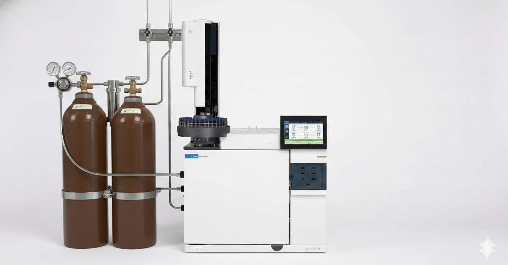

Current Run
-- min
-- pA
Initializing instrument systems...

| # | RT (min) | Area | Area % | Height |
|---|---|---|---|---|
| No peaks detected | ||||
Run analysis to see results
Igniting FID flame...
Injecting sample...